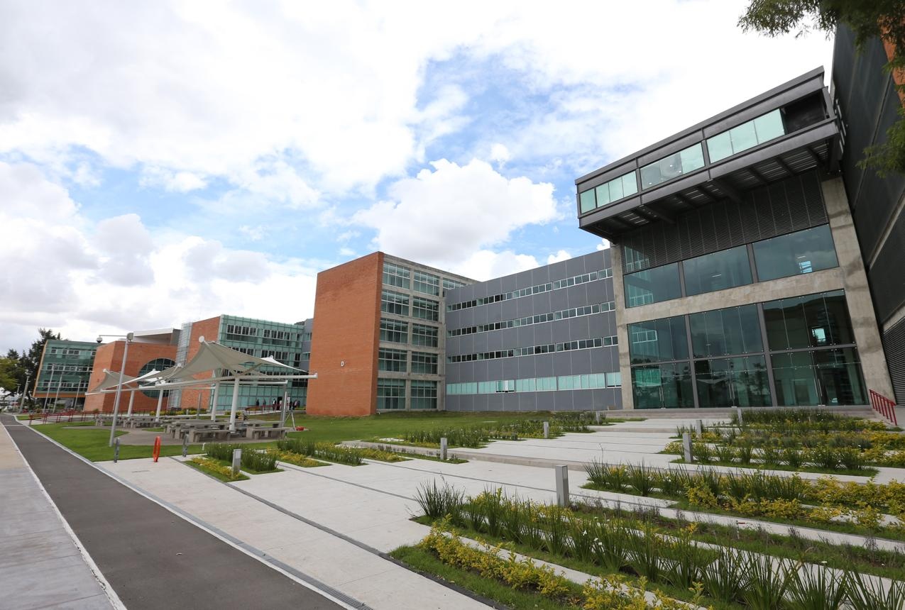
About AI Tech University
Welcome to AI Tech University, a modern institution dedicated to excellence in technology, innovation, and academic achievement. Established in 2026, AI Tech University was founded with the vision of preparing future generations to lead the rapidly evolving world of technology. We are committed to providing high-quality education, cutting-edge research opportunities, and practical learning experiences that empower students to become skilled professionals and responsible global citizens.
At AI Tech University, we specialize in technology-focused disciplines, including Computer Science, Artificial Intelligence, Cybersecurity, Data Science, and Software Engineering. Our academic programs are carefully designed to combine strong theoretical foundations with hands-on laboratory experience, industry collaboration, and research-driven learning. Students are encouraged to think critically, solve complex real-world problems, and develop innovative solutions that contribute to society and the advancement of technology.
Our campus provides a welcoming and inclusive learning environment where students from diverse backgrounds can thrive academically, professionally, and personally. Supported by experienced faculty members, modern laboratories, digital learning resources, and strong partnerships with industry leaders, our students gain the knowledge, confidence, and practical skills needed to succeed in today's competitive global workforce.
At AI Tech University, education extends beyond the classroom. We believe in fostering creativity, leadership, teamwork, ethical responsibility, and lifelong learning. Whether students aspire to become software engineers, AI researchers, cybersecurity experts, data scientists, or technology entrepreneurs, our mission is to provide them with the opportunities, guidance, and resources needed to transform their ambitions into successful careers and make a meaningful impact on the world.
Our Mission & Vision
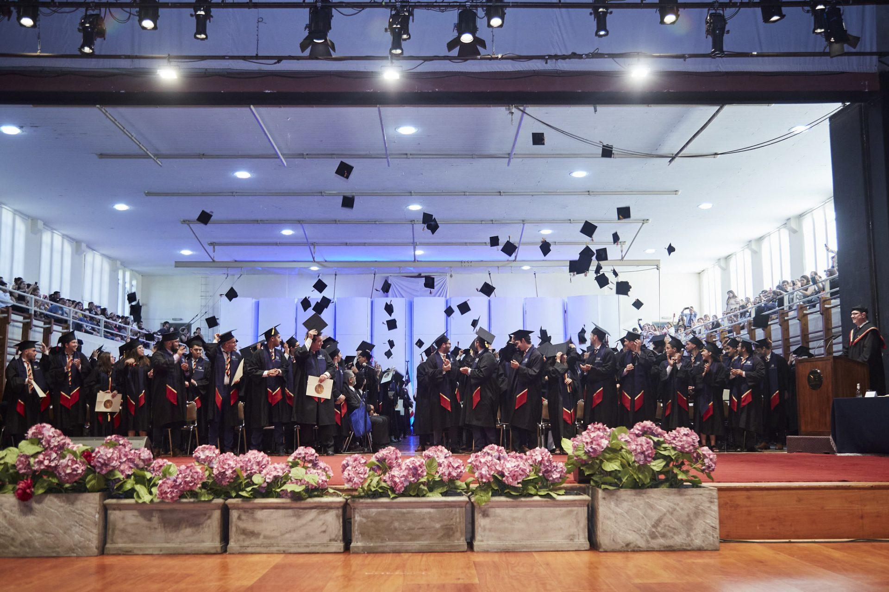
Our Mission
At AI Tech University, our mission is to provide a world-class education that inspires innovation, critical thinking, and lifelong learning. We are committed to preparing students with the knowledge, technical expertise, and ethical values required to succeed in an ever-evolving technological world. Through academic excellence, cutting-edge research, industry partnerships, and hands-on learning experiences, we empower our students to become creative problem-solvers, responsible leaders, and skilled professionals who contribute to the advancement of technology and the betterment of society.
Our Vision
Our vision is to become a globally recognized center of excellence in technology education, research, and innovation. We strive to create an inspiring academic environment where curiosity, creativity, and collaboration drive groundbreaking discoveries and technological progress. AI Tech University aims to educate future innovators, entrepreneurs, researchers, and technology leaders who will shape the future of Artificial Intelligence, Computer Science, Cybersecurity, Data Science, Software Engineering, and other emerging fields while making a positive impact on communities around the world.
History
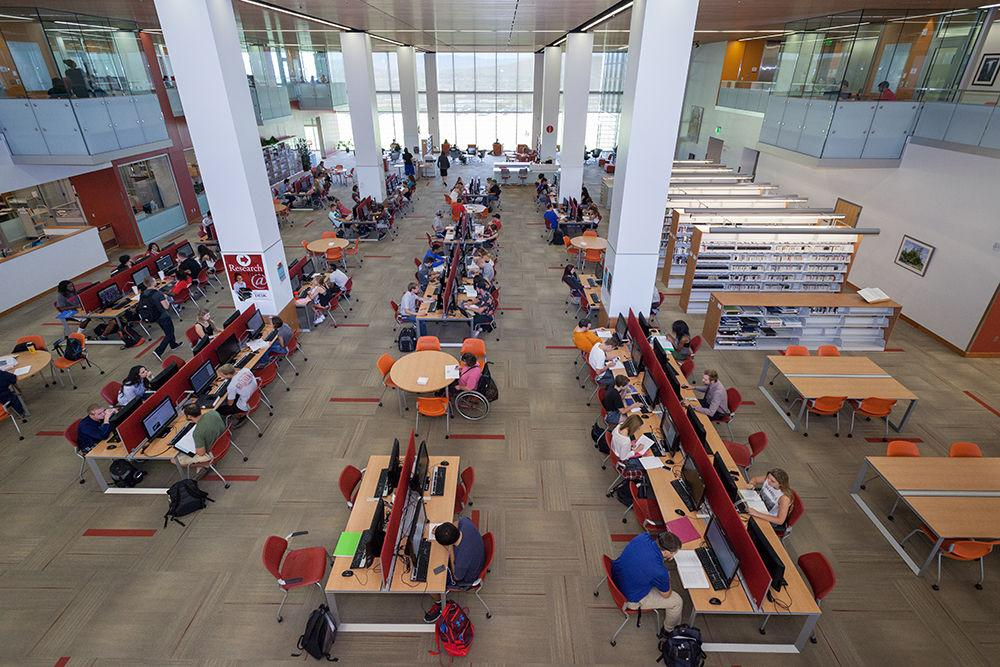
AI Tech University was established in 2026 with a bold vision to create a new generation of technology leaders capable of shaping the future through innovation, research, and education. Founded by a group of experienced educators, researchers, and technology professionals, the University began with the goal of providing students with a modern, industry-focused learning environment that bridges the gap between academic knowledge and real-world applications.
From its beginning, AI Tech University focused on delivering high-quality programs in Computer Science, Artificial Intelligence, Cybersecurity, Data Science, and Software Engineering. As technology continued to evolve, the University expanded its academic offerings, invested in advanced laboratories, established research centers, and built strong partnerships with leading technology companies and organizations. These initiatives have enabled students to gain valuable practical experience through internships, research projects, innovation challenges, and industry collaborations.
Although AI Tech University is a young institution, it has quickly earned a reputation for academic excellence, innovation, and student success. Today, the University welcomes students from diverse cultural and educational backgrounds, creating a vibrant learning community where ideas are shared, creativity is encouraged, and future technology leaders are developed. As we continue to grow, AI Tech University remains committed to advancing education, promoting research, and preparing graduates to make meaningful contributions to the global technology industry and society.
Our Values
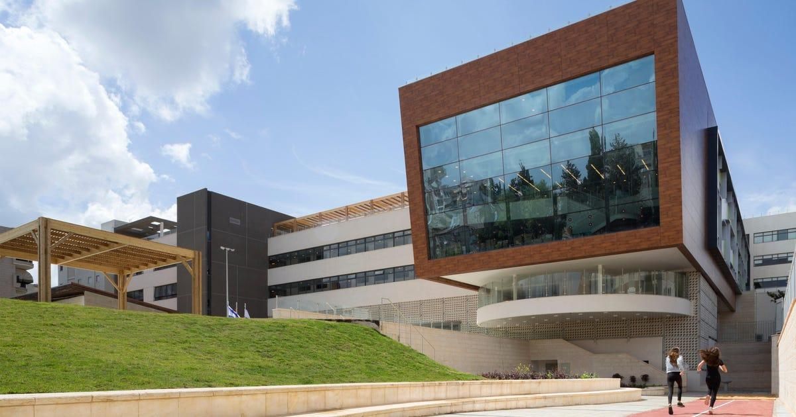
Our Core Values
At AI Tech University, our values define who we are as an institution and guide every aspect of our academic, research, and community activities. They inspire us to create an environment where students, faculty, and staff work together to achieve excellence, encourage innovation, and make a positive impact on society.Academic Excellence
We are committed to maintaining the highest standards of teaching, learning, and research. Through rigorous academic programs and continuous improvement, we strive to equip our students with the knowledge, skills, and confidence needed to succeed in a competitive global environment.Innovation
Innovation is at the heart of everything we do. We encourage creativity, curiosity, and the exploration of new ideas that lead to technological advancement and meaningful solutions for real-world challenges.Integrity
We believe in honesty, transparency, fairness, and accountability. Every member of the AI Tech University community is expected to uphold the highest ethical standards in academic work, research, and professional conduct.Diversity and Inclusion
We value and respect individuals from all cultures, backgrounds, and perspectives. Our inclusive learning environment encourages collaboration, mutual respect, and equal opportunities for every student to grow and succeed.Leadership
We prepare students to become confident leaders who inspire positive change. Through teamwork, communication, responsibility, and decision-making, we empower our graduates to lead with integrity in their careers and communities.Research and Discovery
We promote a culture of research, critical thinking, and lifelong learning. Our faculty and students work together to advance knowledge, explore emerging technologies, and contribute innovative ideas that benefit society.Community Engagement
AI Tech University believes in giving back to society. We encourage students to participate in volunteer activities, community service, and outreach programs that create a positive impact locally and globally.Lifelong Learning
Learning does not end at graduation. We inspire our students and graduates to continuously develop their knowledge, embrace new technologies, and adapt to the ever-changing demands of the modern world.Why Choose Us?
Why Choose AI Tech University?
Choosing the right university is one of the most important decisions in a student's academic journey. At AI Tech University, we are committed to providing an exceptional educational experience that prepares students for successful careers in the rapidly evolving world of technology. Our combination of academic excellence, modern facilities, experienced faculty, and industry-focused learning ensures that every student receives the knowledge, skills, and confidence needed to succeed in a competitive global environment.- Industry-Focused Curriculum – Our programs are regularly updated to meet the latest technological trends and the needs of employers worldwide.
- Experienced Faculty – Learn from highly qualified professors, researchers, and industry professionals who bring both academic knowledge and real-world experience into the classroom.
- Modern Laboratories – Students have access to advanced computer laboratories, Artificial Intelligence research labs, cybersecurity centers, robotics facilities, and innovation hubs equipped with the latest technologies.
- Hands-On Learning – Practical projects, internships, workshops, coding competitions, and research opportunities allow students to gain valuable real-world experience before graduation.
- Career Development & Placement Support – Our dedicated career services team provides career counseling, internship opportunities, resume workshops, interview preparation, and job placement assistance.
- Research & Innovation – Students are encouraged to participate in research projects, innovation challenges, and technology competitions that foster creativity and critical thinking.
- Scholarships & Financial Aid – AI Tech University offers a variety of merit-based and financial assistance scholarships to help talented students achieve their educational goals.
- Global Learning Environment – We welcome students from diverse cultural backgrounds, creating an inclusive community that encourages collaboration, respect, and international perspectives.
- Student Life – Beyond academics, students can participate in clubs, sports, leadership programs, cultural events, and community service activities that promote personal growth and lifelong friendships.
- Commitment to Excellence – Our mission is to educate future innovators, entrepreneurs, researchers, and technology leaders who will make meaningful contributions to society through knowledge, integrity, and innovation.
Facilities
At AI Tech University, we believe that an outstanding education requires an exceptional learning environment. Our modern campus is equipped with world-class facilities that support academic excellence, research, innovation, and student life. Every facility is designed to provide students with the resources they need to learn, collaborate, and succeed throughout their academic journey.
Smart Classrooms
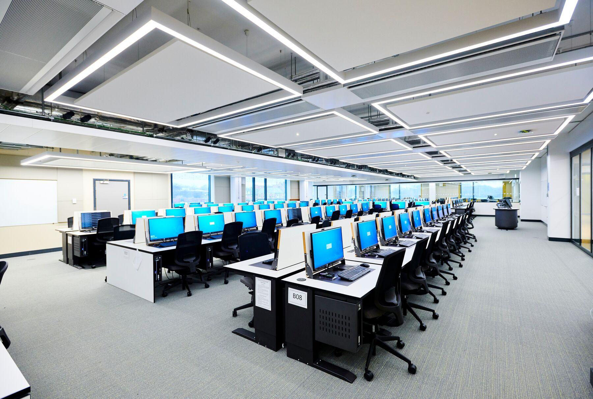
Our smart classrooms are equipped with interactive digital displays, multimedia presentation systems, high-speed internet access, and modern teaching technologies that create an engaging and collaborative learning experience. These classrooms enable students to participate in interactive discussions, virtual demonstrations, and technology-enhanced lessons that improve understanding and academic performance.
Advanced Computer Laboratories
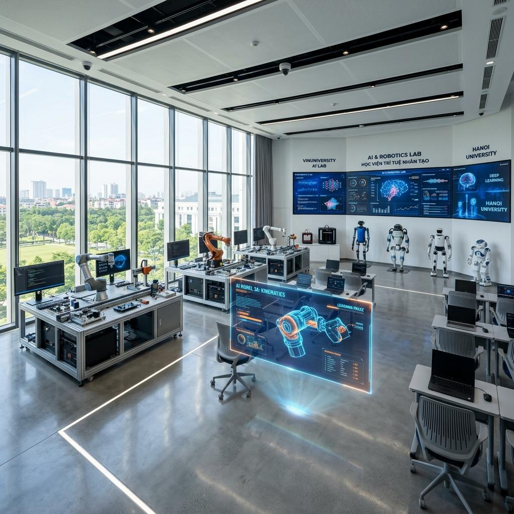
AI Tech University provides multiple state-of-the-art computer laboratories featuring high-performance workstations, the latest software development tools, cloud computing platforms, and programming environments. These laboratories allow students to gain practical experience in software development, web technologies, database systems, networking, and operating systems while working on real-world projects.
Artificial Intelligence & Robotics Lab
Our Artificial Intelligence and Robotics Laboratories provide students with access to advanced AI software, robotics equipment, machine learning platforms, computer vision technologies, and intelligent automation systems. Students use these facilities to design innovative AI solutions, build robotic systems, conduct research, and participate in national and international technology competitions.
Cyber Security Laboratory
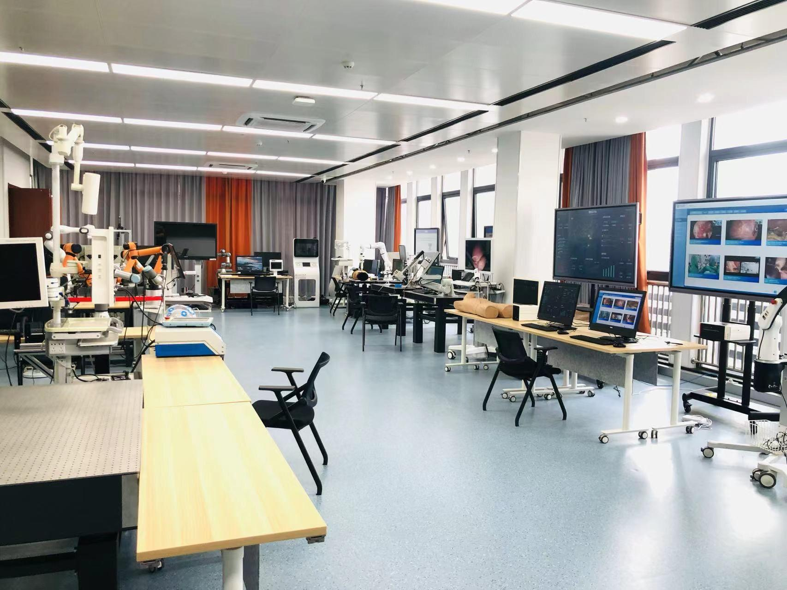
The Cybersecurity Laboratory offers a secure environment where students learn ethical hacking, penetration testing, digital forensics, network security, cloud security, and cyber defense strategies. Equipped with professional security tools and virtual simulation environments, the laboratory prepares students to identify, analyze, and defend against modern cyber threats.
Digital Library
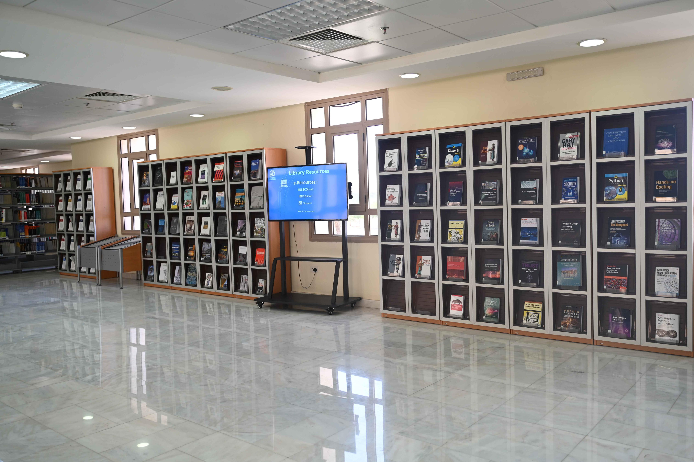
Our modern digital library provides students and faculty with access to thousands of printed books, e-books, academic journals, research papers, online databases, and multimedia learning resources. Quiet study areas, collaborative workspaces, and digital research tools create an ideal environment for learning, research, and academic success.
Student Cafeteria
The university cafeteria offers a wide variety of healthy, nutritious, and affordable meals in a comfortable and welcoming atmosphere. Students can enjoy local and international cuisine while socializing with friends, collaborating on projects, or relaxing between classes. Comfortable seating areas and hygienic food preparation ensure a pleasant dining experience for everyone.
Student Innovation Hub
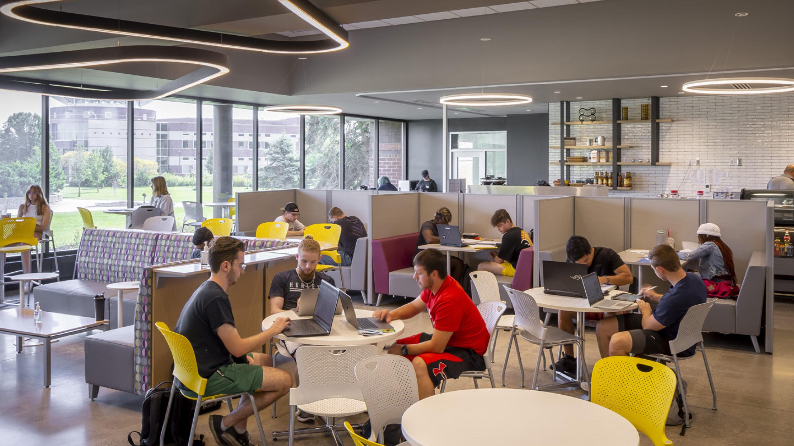
The Student Innovation Hub serves as a collaborative workspace where students from different academic programs come together to develop innovative ideas, participate in hackathons, coding competitions, robotics challenges, and entrepreneurial projects. This creative environment encourages teamwork, leadership, and problem-solving while helping students transform their ideas into practical solutions.
Innovation & Research Hub
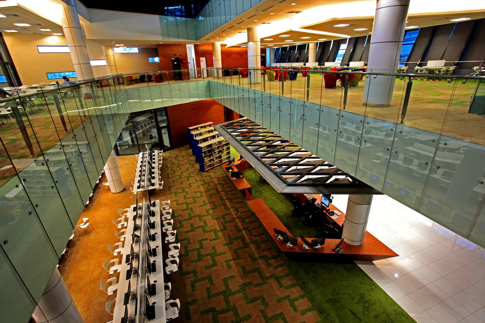
Innovation is one of the core principles of AI Tech University. Our Innovation & Research Center encourages students and faculty members to collaborate on cutting-edge research projects, technological innovations, startup ideas, and scientific discoveries. The center provides modern research equipment, collaborative workspaces, and mentorship opportunities that inspire creativity and entrepreneurship.
Sports & Recreation Center

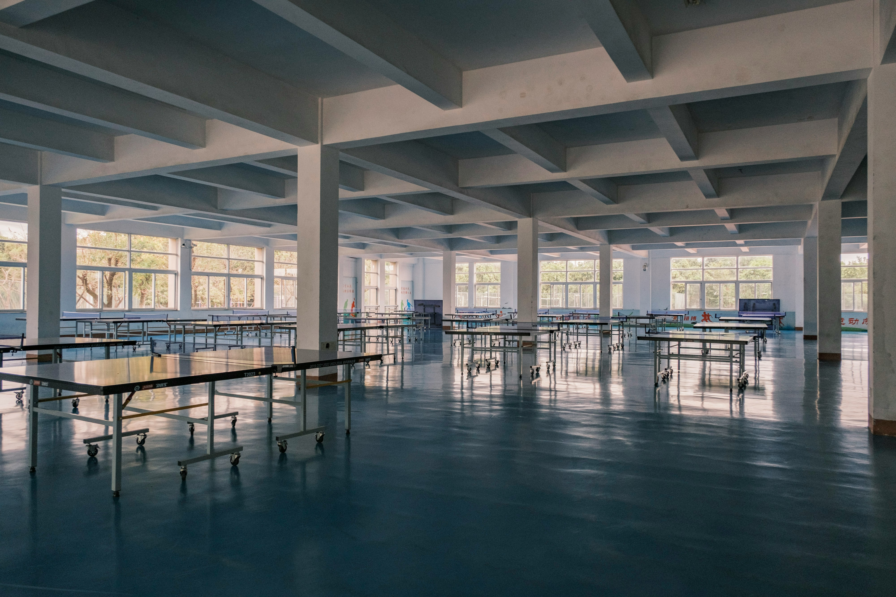
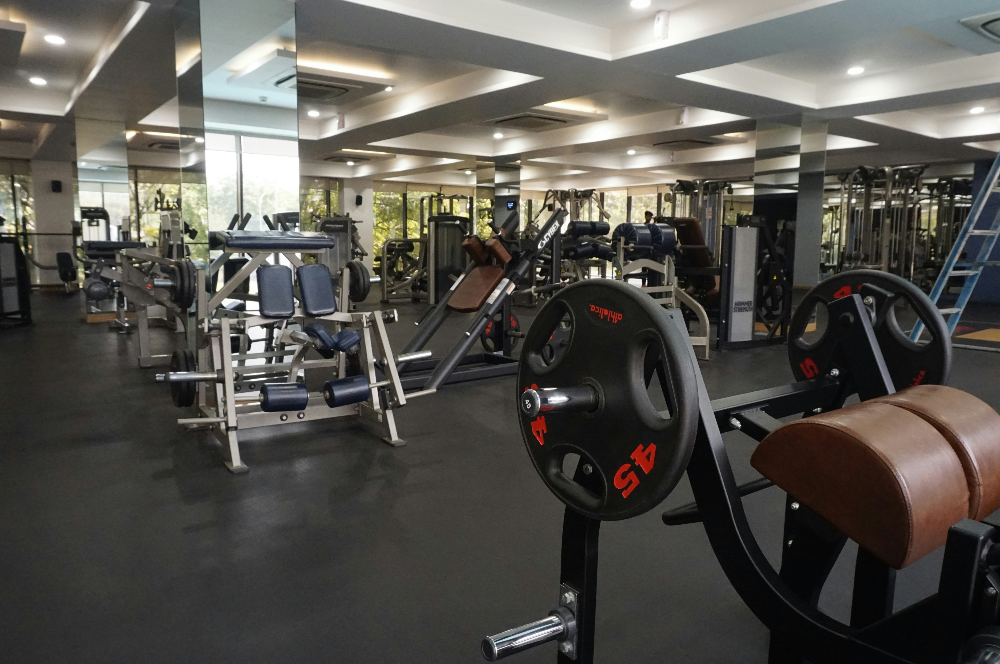
We believe that physical well-being is an important part of student success. Our Sports & Recreation Center includes indoor and outdoor sports facilities, a modern fitness center, basketball and volleyball courts, football grounds, and recreational spaces where students can stay active, reduce stress, and maintain a healthy lifestyle while balancing their academic responsibilities.
Career Development Center
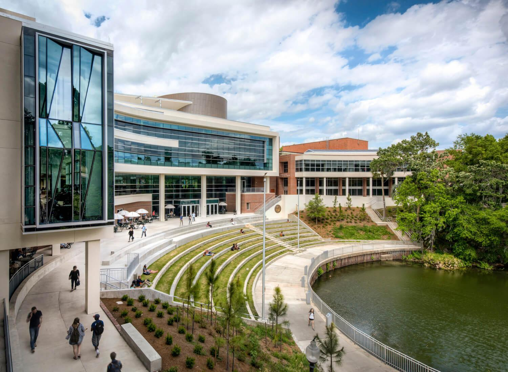
Our Career Development Center is dedicated to helping students successfully transition from university to professional careers. The center provides career counseling, resume and cover letter assistance, internship opportunities, interview preparation workshops, networking events, and job placement support. Through partnerships with leading technology companies, students have access to valuable employment opportunities and professional development programs.
At AI Tech University, our campus is much more than a place to attend classes. It is a vibrant community where students learn, innovate, collaborate, conduct research, develop lifelong friendships, and prepare to become the next generation of technology leaders. Every facility has been designed to support academic excellence while providing students with an inspiring environment where they can achieve their full potential and make a meaningful impact on the world.
Apply Now